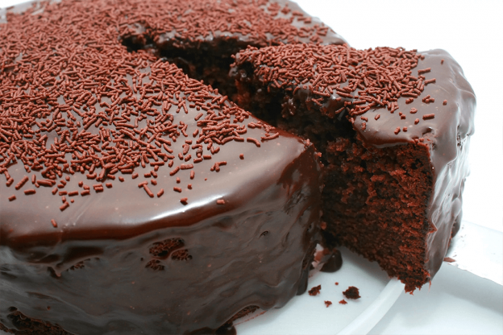
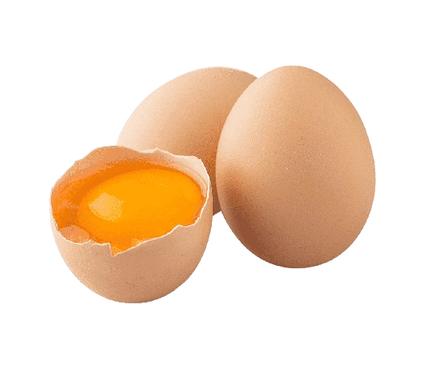
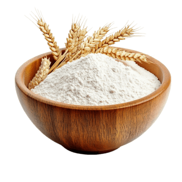
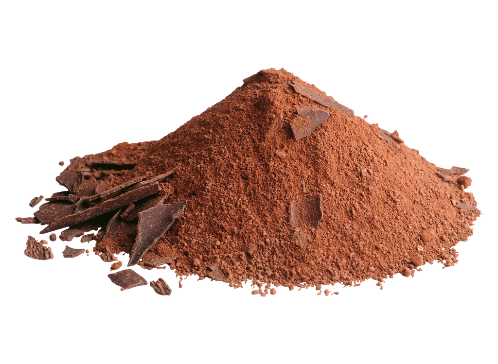
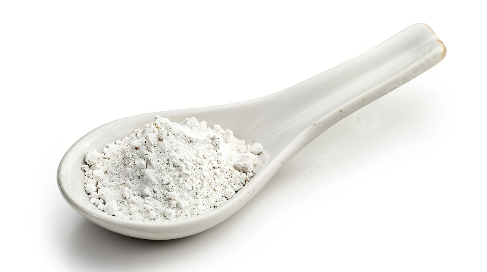
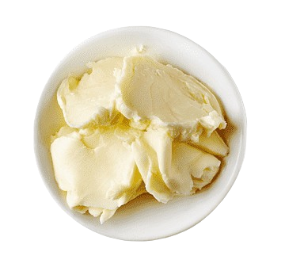

Bolo de Chocolate Simples

Ingredientes
Massa
- 4 ovos
- 1 Xícara de óleo de soja
- 1 Xícara de água morna
- 1 Xícara de farinha de trigo
- 1 Xícara de Chocolate em pó ou Cacau
- 1 Colher(café) de fermento em pó
Calda
- 8 Colheres(sopa) de chocolate em pó ou cacau
- 4 Colheres(sopa) de margarina
 1 Lata de leite condensado
1 Lata de leite condensado
Modo de Preparo
Massa
- Bata as claras em neve e prepare
- Em outra vasilha, bata as gemas com açúcar
- Em seguida, acrescente a água morna, o chocolate, o óleo e misture
- Acrescente a farinha de trigo e bata na batedeira, na velocidade alta por 3 minutos
- Acrescente o fermento em pó e mexa aos poucos
- Acrescente a clara em neve e mexa até ficar totalmente envolvida na massa
- Asse no forno a 180 graus por 50 minutos
Calda
- Misture a margarina com o chocolate/cacau e leite condensado
- Cozinhe por 3 minutos
- Desligue e joque imediatamente no bolo